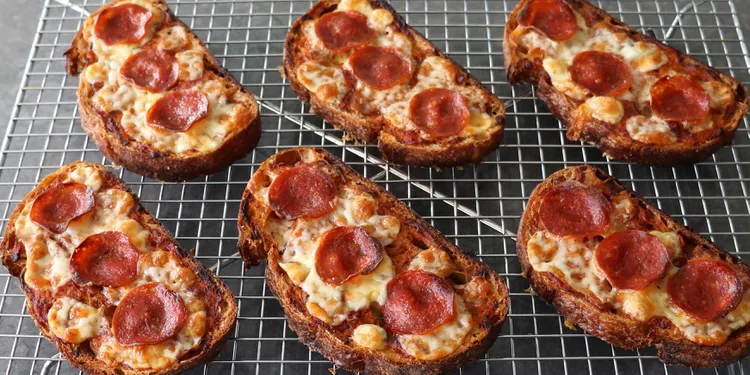

Bread and Butter Pizza

Bread and Butter Pizza uses slices of several-day-old bread (rather than uncooked dough) to create a uniquely crunchy crust. Typically, this method results in a sad excuse for a pizza slice, but this hack ensures you get a crave-worthy dish every time.
Ingredients
- 6 thick slices of bread
- Butter (for sticking parchment and buttering bread)
- Fresh Parmesan cheese (1 block)
- Pizza sauce
- Fresh mozzarella cheese (diced)
- Pepperoni Slices
- Favorite pizza toppings
Preparation
- Preheat your oven to the temperature recommended for baking pizza (usually around 425-450°F or 220-230°C).
- To prevent parchment paper from moving, make a few small dots of butter directly on the baking pan, then place a piece of parchment paper on top. The butter dots will help the paper stick to the pan.
- Place the six thick slices of bread on the baking pan, ensuring there's some space between each slice.
- Generously butter both sides of each slice of bread. You can use a knife or a pastry brush to apply the butter.
- Grate the fresh Parmesan cheese over the top of each buttered slice. The cheese should cover the bread from crust to crust, but don't pile it up too much.
- Gently press the grated cheese down to help it adhere to the bread.
- Flip each slice of bread over so the cheese side is facing down. The cheese and butter will meld together and caramelize onto the bottom of the pan as it bakes.
- Spoon your favorite pizza sauce onto the opposite, buttered side of each slice. Spread the sauce evenly from edge to edge. Use a moderate amount of sauce – you don't need to be too heavy-handed.
- Prebake the tomato-sauced slices in the preheated oven. This step helps to caramelize the sauce slightly. The exact time will vary, but it might take around 5-7 minutes.
- Once the prebaking is done, remove the pan from the oven. You'll notice the sauce has slightly caramelized.
- Load up each slice with diced fresh mozzarella, a few slices of pepperoni, and any other favorite pizza toppings you like.
- Place the pan back in the oven and bake the slices until the cheese is melted, browned, and bubbly. This will likely take another 5-7 minutes.
- Once the pizza slices are nicely browned and the cheese is melted, remove the pan from the oven.
- Carefully transfer the slices to a cooling rack. This prevents the bottom crust from becoming soggy due to steam trapped in the pan.
- Allow the slices to cool slightly before serving. The bottom crust should be extra-crispy and delicious due to the butter and cheese caramelization.
Enjoy your hot and extra-crispy pieces of buttery pizza!